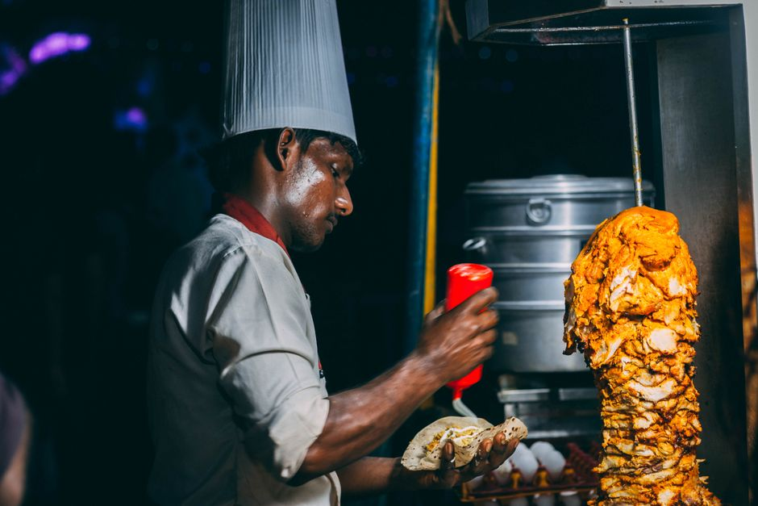
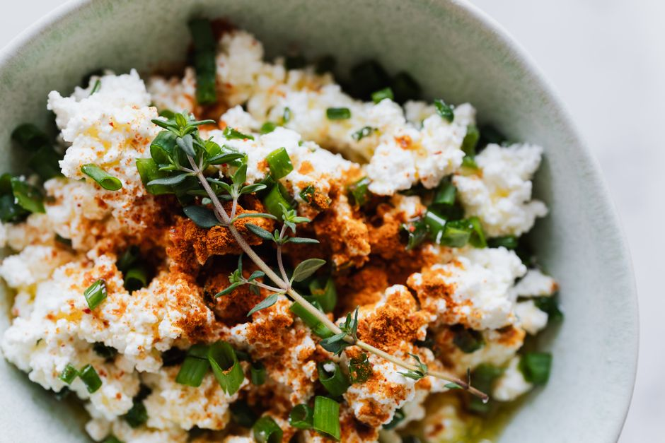

Optimizing Your Food Budget While Studying: Kitchen Hacks You Need

Photo: hitesh choudhary / Pexels
Introduction
Studying can be expensive, but your food budget doesn't have to be. With a few simple kitchen hacks, you can save money without sacrificing quality or taste. This article will guide you through practical strategies to help you manage your food expenses while keeping your kitchen skills sharp.
Plan Your Meals
Photo: beyzahzah / Pexels
Before you hit the grocery store, take a moment to plan your meals for the week. This simple step can save you a lot of money. Here’s how:
- Make a List: Write down the meals you plan to cook for the week. Stick to your list to avoid impulse buys.
- Batch Cooking: Cook large quantities of meals and store them in the freezer. This allows you to have home-cooked meals without spending time in the kitchen every day.
- Use a Meal Planner: Apps like Mealime or Mealime can help you organize and save recipes, making planning a breeze.
Bulk Buying and Smart Shopping
Buying in bulk can significantly reduce the cost per unit of your ingredients. Here are some tips:
- Buy in Season: Purchase fruits and vegetables that are in season. They are usually cheaper and fresher.
- Frozen Produce: Frozen fruits and vegetables are often less expensive and just as nutritious as fresh. Plus, they keep longer.
- Use Coupons and Discounts: Take advantage of store discounts and coupons. Apps like Ibotta or CouponMom can help you find the best deals.
Smart Ingredient Substitutions

Photo: https://kaboompics.com/ / Pexels
Sometimes, you can swap ingredients to save money without compromising on flavor. Here are some examples:
- Dried vs. Fresh Herbs: Dried herbs are often cheaper and last longer. A little goes a long way, so you can stretch your budget.
- Use Store Brands: Often, store brands are just as good as name brands but at a fraction of the cost.
- Swap Out Luxury Ingredients: For instance, you can use olive oil instead of avocado oil for most recipes. Avocado oil is pricier and not always necessary.
Cooking Techniques to Save Money
Certain cooking techniques can also help you save money. Here are a few:
- Pressure Cooking: Pressure cookers can cook food faster and use less energy. Plus, they can process cheaper cuts of meat.
- Slow Cooking: Slow cookers are great for making stews and soups with tough, affordable cuts of meat.
- Food Repurposing: Leftovers can be transformed into new meals. Think of using leftover vegetables in omelets or stir-fries.
Keep Your Kitchen Organized
A tidy kitchen can help you save money by preventing food waste and making efficient use of your ingredients.
- Regular Inventory Check: Check what you have in your pantry and fridge regularly to avoid buying duplicates.
- Use Fridge Organization: Use clear containers or labels to keep track of what you have and when it expires.
- Plan Around Your Ingredients: Start with what you have on hand to minimize trips to the store.
Final Thoughts
By implementing these strategies, you can optimize your food budget while studying. Remember, the key is planning and organization. With a little effort, you can enjoy delicious, healthy meals without breaking the bank. Happy cooking!
Recommended products
As an Amazon Associate, I earn from qualifying purchases.